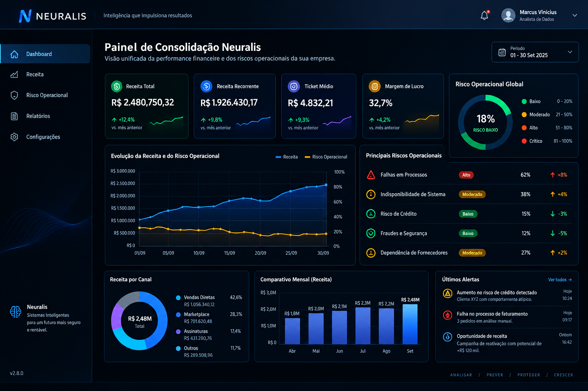

Reduza o ciclo de fechamento mensal em até 70%.
A Neuralis consolida dados de múltiplos sistemas legados em uma única interface de comando, transformando a média de fechamento de 7 para 2 dias úteis.

Chega de relatórios fragmentados
Diretores perdem até 15 horas semanais tentando reconciliar dados de diferentes planilhas e softwares. Nós resolvemos isso.
Consolidação Automática
Integração via API com ERPs e CRMs, unificando a verdade financeira em tempo real.
Análise de Variância
Identifique desvios orçamentários instantaneamente com alertas de anomalias baseados em histórico.
Compliance Nativo
Trilhas de auditoria completas e criptografia AES-256 para total segurança de dados sensíveis.
Ciclo de Fechamento Ágil
Redução drástica no tempo de espera por dados, permitindo decisões estratégicas imediatas.
A Metodologia Neuralis
Não é mágica, é engenharia de dados aplicada à gestão executiva.
Mapeamento de Fontes
Identificamos todos os silos de dados da sua empresa, de planilhas legadas a APIs modernas.
Saneamento e Normalização
Limpamos duplicidades e normalizamos a nomenclatura para que "Receita" signifique a mesma coisa em todos os setores.
Camada de Inteligência
Aplicamos modelos de análise de tendências para projetar cenários futuros com base em dados reais.
Interface de Comando
Entrega de insights via Dashboard Executivo com foco em KPIs de valor real.
Recursos de Alta Performance
Arquitetura Multi-Tenant
Isolamento total de dados entre subsidiárias com controle de acesso granular por cargo.
Resposta em Milissegundos
Processamento em cache distribuído para que a navegação em grandes volumes de dados seja instantânea.
Criptografia de Ponta a Ponta
Implementação de TLS 1.3 e AES-256, garantindo a confidencialidade de dados estratégicos.
Sincronização Agendada
Atualizações automáticas de dados a cada 15 minutos, eliminando a dependência de extrações manuais.
"A Neuralis resolveu a fragmentação de dados entre nossas unidades. O que levava dias para ser consolidado agora é entregue em tempo real com precisão absoluta."
"A visibilidade sobre a variância orçamentária nos permitiu ajustar a rota operacional no meio do trimestre, evitando perdas significativas."
Pronto para eliminar a fadiga de decisão?
Agende uma demonstração técnica com nossos especialistas e veja como a Neuralis se integra ao seu ecossistema de dados.
Dúvidas Frequentes
Utilizamos criptografia AES-256 para dados em repouso e TLS 1.3 para dados em trânsito. Nossos servidores são auditados e seguem rigorosamente as normas da LGPD e GDPR.
O mapeamento inicial leva em média 5 dias úteis. A consolidação completa dos dados e a entrega do dashboard executivo ocorrem em até 15 dias após a liberação dos acessos via API.
Não. A Neuralis atua como uma camada de inteligência e consolidação superior. Nós consumimos os dados do seu ERP e entregamos a análise consolidada, sem a necessidade de trocar seus softwares operacionais.